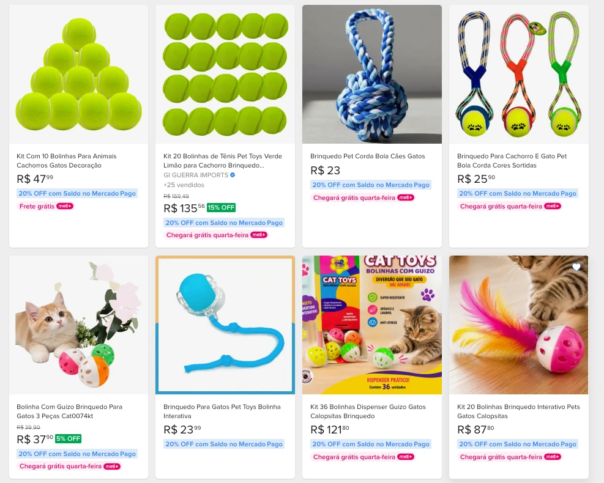

Diagnóstico de canal · Amazon Brasil e Mercado Livre · 5 de outubro de 2026
Pet Toys nos marketplaces: o que o comprador vê hoje
A Pet Toys é a linha pet de uma indústria com mais de 50 mil metros quadrados de fábrica. Nos
marketplaces, ela aparece como sobra de estoque de revendedor: poucas fichas, títulos de planilha, nenhuma
escolha de cor, oito vendedores sem critério e o nome da marca usado por produtos que não saem da fábrica.
15fichas da marca na Amazon, linha de cães, com estoque
8vendedores anunciando a marca na Amazon
1ficha com avaliação, de quinze
Mensagem central. O problema não é o produto nem o preço. É que ninguém governa como a marca
aparece no canal. Ficha, cor, título, quem vende e com que estoque estão nas mãos de quem chegou primeiro.
Isso tem conserto, e o conserto começa pela marca, não pela mídia.
Levantamento por equipe impulsio. Nenhum dado interno da Pet Toys foi usado. Tudo que está aqui
é público e foi capturado em tela na data indicada. Onde algo não foi confirmado, está escrito.
Contexto
Quem é a Pet Toys
A Pet Toys é a divisão pet do Grupo Toys. O grupo começou em 1997 com a Mini Toys e hoje reúne cinco empresas em
quatro setores: festa, brinquedos, pet e confeitaria. As marcas do grupo são Mini Toys, NC Toys, LSC Toys, Dolcelina
e Pet Toys.
Item
Informação
Início do grupo
1997
Início da Pet Toys
2019
Estrutura
mais de 50.000 m², com injetoras, extrusoras, sopradoras, impressão, corte, metalização e ferramentaria, centro de distribuição próprio
Colaboradores
cerca de 350
Itens no portfólio do grupo
mais de 4.000
Fábrica
zona leste de São Paulo
Linha pet no site da marca
50 brinquedos para cães, comedouros e bebedouros, e seis linhas para gatos: Glitter, Neon, Prime, Acrílico, Clássica e Degradê
Os temas que a Pet Toys quer discutir são controle de marca nos marketplaces e venda direta para as plataformas
no modelo em que o marketplace compra da indústria e revende (chamado 1P).
Como o levantamento foi feito
Buscas e capturas de tela na Amazon.com.br e no Mercado Livre em 5 de outubro de 2026, a partir de São Paulo
(CEP 01319-900). Sem login de vendedor, sem acesso a dados da Pet Toys, sem ferramenta paga. A regra seguida:
todo número tem fonte, data e nome de vendedor. Nenhuma linha é estimativa apresentada como fato.
Fonte
O que foi capturado
Amazon.com.br
página da marca Pet Toys em Pet Shop › Cachorros, filtro de vendedores, ficha do comedouro alto
Mercado Livre
busca "pet ball toys" com filtro de marca Pet Toys (48 resultados), catálogo do comedouro alto, anúncio da aranha 5139, anúncio do comedouro com quatro cores
Site e busca web
catálogo da marca, informações institucionais do grupo
Limites do que foi verificado. A linha de gatos na Amazon não foi capturada. Fichas sem
estoque não aparecem no filtro padrão da Amazon. O número 48 do Mercado Livre é o que uma busca específica devolve,
não o total da marca no canal. Não foi confirmado se a Amazon compra da fábrica ou de um distribuidor.
Achado 1 · Amazon
Quinze fichas para uma fábrica de 50 mil m²
O site da Pet Toys lista 50 brinquedos só para cães, mais comedouros, bebedouros e seis linhas para gatos. Na
Amazon, a página da marca na seção de cachorros mostra 15 resultados com estoque. Brinquedo, comedouro e bebedouro,
tudo junto.
Por que importa: o que o comprador da Amazon conhece da marca é uma fração do catálogo, e não foi a
marca que escolheu qual fração.
Amazon.com.br · página da marca Pet Toys, Pet Shop › Cachorros, ordenado por mais vendidos · 5 out 2026
Achado 2 · Amazon
A ficha não diz o nome da marca
Doze dos quinze títulos não trazem "Pet Toys". Oito usam abreviação ou código de estoque: "Brinq.", "Mass",
"Macico", "P/Caes", "-0162", "-2633". Exemplo real: "Brinq. Ossinho Mass Cravo Pequeno-2633".
Indicador
Resultado
Títulos sem o nome da marca
12 de 15
Títulos com abreviação ou código
8 de 15
Ficha "para Cães e Gatos" com espécie-alvo
só "Cão"
Campo "controle por rádio" no comedouro
"Alimentação de cães"
Por que importa: o título é a primeira coisa que a busca lê. Quem procura "ossinho para cachorro" não
encontra um título escrito como linha de planilha.
Achado 3 · Amazon e Mercado Livre
A cor que o comprador não escolhe
O comedouro alto da Pet Toys existe em quatro cores: azul, rosa, verde e vermelho. Na Amazon, o campo "Cor" da
ficha diz apenas "Azul", e não há botão para escolher outra. No Mercado Livre, um revendedor montou sozinho uma ficha
com as quatro cores para escolher.
Situação
Resultado
Fichas da Amazon com escolha de cor
0 de 15
Fichas "Sortido" na Amazon (a cor é surpresa)
2
Bebedouro Glitter rosa, ficha própria
R$ 34,49
Bebedouro Glitter azul, outra ficha
R$ 29,09
Mercado Livre, comedouro com quatro cores na mesma ficha
R$ 39,90 · 3 vendidos
Na Amazon, cor deveria ser variação de uma ficha única: um clique para trocar, avaliações somadas, posição na
busca somada. Aqui cada cor virou ficha solta com preço próprio, ou virou "sortido", que é devolução esperando
acontecer.
Por que importa: dá para fazer, um revendedor já fez. A pergunta é por que a ficha da marca não é da marca.
Mercado Livre · comedouro alto com seletor de cor azul, rosa, verde e vermelho · 5 out 2026
Achado 4 · Amazon
Oito vendedores, nenhum critério visível
O filtro "Vendido por" da página da marca lista sete vendedores. Um oitavo, que não aparece no filtro, está
vendendo o comedouro alto com envio pela Amazon.
Vendedor
Observação
Amazon.com.br
a própria Amazon; não confirmado se compra da fábrica ou de distribuidor
CSG Marketplace
vende o comedouro alto, não aparece no filtro
shoten, COVOFEL AGROPET, Pet Precinho Bom, Loja Malu Variedades, PET CENTER TATUAPE, Patinhas
revendedores
Por que importa: o risco não é quem está lá hoje, é o próximo. Sem critério de credenciamento, quem
chega amanhã ocupa a mesma vitrine e cria a ficha do jeito que quiser.
Amazon.com.br · filtro "Vendido por" na página da marca Pet Toys · 5 out 2026
Achado 5 · Mercado Livre e Amazon
Um Pet Ball, cinco preços
A mesma embalagem do Pet Ball aparece de R$ 8,00 a R$ 45,99. O comedouro alto vai de R$ 24,90 a R$ 39,90 no
Mercado Livre e custa R$ 34,90 na Amazon. Na mesma ficha do ossinho maciço pequeno da Amazon há duas ofertas, com
preços e prazos diferentes.
Produto
Preços encontrados
Pet Ball, Mercado Livre
R$ 8,00 · 21,99 · 30,79 · 45,99
Pet Ball, Amazon
R$ 28,99
Comedouro alto, Mercado Livre
R$ 24,90 · 29,90 · 39,90
Comedouro alto, Amazon
R$ 34,90
Ossinho maciço pequeno, Amazon
R$ 14,00 · 15,90
Ressalva: não foi confirmado se todos os Pet Ball são do mesmo tamanho. O site lista o Pet Ball de 13 cm. O
comprador também não confirma: ele vê cinco preços para uma caixa igual.
Por que importa: o revendedor não está atacando a marca. Está fazendo o óbvio com o preço que recebeu e
a unidade que sobrou. A resposta é critério de canal e diretriz de posicionamento, nunca imposição de preço ao
revendedor, que tem autonomia comercial.
Mercado Livre · busca "pet ball toys" com filtro de marca Pet Toys · 5 out 2026
Achado 6 · Amazon
Estoque de vitrine, não de canal
Nas dez fichas em que o aviso de estoque é visível, todas mostram "somente N em estoque". O maior estoque
encontrado é de nove unidades. Três fichas têm uma unidade. No Mercado Livre, um dos vendedores do comedouro mostra
"Última em estoque!". Um pote com 36 bolinhas a R$ 99,80, que é embalagem de balcão de pet shop, aparece no mesmo
corredor do consumidor final.
Por que importa: quando a última unidade sai, a ficha some da busca e o histórico dela para. Quem repõe
é o revendedor, quando quer. A fábrica não entra nessa conta.
Achado 7 · Amazon
Catorze fichas sem nenhuma avaliação
Avaliação na Amazon só existe depois de uma compra. Das quinze fichas, uma tem avaliação: o Pet Ball, com nota 5,0
e três avaliações. As outras catorze não têm nenhuma. Para comparação, um comedouro plástico de outro fabricante
nacional, na mesma categoria, tinha 210 avaliações com nota 4,7 em setembro de 2026.
Por que importa: sete anos de Pet Toys e a Amazon não tem histórico da marca. Cada vez que um
revendedor cria a ficha do zero, o que vendeu antes fica na ficha antiga, que some quando o estoque acaba.
Achado 8 · Mercado Livre
No Mercado Livre, "Pet Toys" é qualquer coisa
A busca "pet ball toys" com o filtro de marca Pet Toys devolve 48 anúncios. Entre eles estão produtos que não saem
da fábrica da Pet Toys, que é de plástico injetado: kit de 20 bolinhas de tênis de um importador, pelúcia de morango,
corda com bola, kit de oito brinquedos, bola com LED. Não foi encontrada loja oficial da marca.
Anúncio com "Pet Toys" no campo marca
Dado
Kit 20 bolinhas de tênis
GI GUERRA IMPORTS · R$ 135,56
Pelúcia coração com apito
R$ 10,99 · +25 vendidos
Loja oficial da marca
não encontrada
Por que importa: o nome da marca é o nome da categoria em inglês. Qualquer vendedor que escreve "pet
toys" no campo marca entra na mesma prateleira. Sem marca registrada e loja oficial, a Pet Toys não tem como se
separar disso.
Mercado Livre · busca "pet ball toys", filtro de marca, 48 resultados · 5 out 2026

Mercado Livre · mesma busca, kits de bolinha de tênis com a marca Pet Toys · 5 out 2026
Achado 9 · Mercado Livre
Quem representa a marca: dois alertas e um bom exemplo
O comedouro alto vermelho tem dois vendedores no catálogo do Mercado Livre. Ao lado dos dois, a plataforma escreve
em vermelho: "Não oferece um bom atendimento". Em outro produto, a aranha de brinquedo código 5139, a revendedora
Dona Patinha vende com reputação MercadoLíder, mais de mil vendas, mais de dez unidades em estoque e o nome da marca
no título.
Vendedor
Produto
Situação
Cantinhopett
comedouro alto
R$ 24,90 · alerta de atendimento
Vivaz Pet
comedouro alto
R$ 29,90 · última unidade · alerta
Dona Patinha
aranha 5139
R$ 13,06 · MercadoLíder · +1000 vendas
Por que importa: a rede sabe vender a marca bem. O que falta é critério para decidir quem representa a
marca, e hoje ninguém escolhe entre o bom e o mau exemplo.
Mercado Livre · "Brinquedo Pet Aranha 5139 - Pet Toys", vendido por Dona Patinha · 5 out 2026
Resumo
O que está parado hoje, sem estimar nada
Não há acesso ao faturamento da Pet Toys, então nenhum valor em reais foi estimado. O quadro abaixo é só o que se
vê na tela, com data de 5 de outubro de 2026.
Indicador
Situação
Títulos sem o nome da marca, Amazon
12 de 15
Fichas sem nenhuma avaliação, Amazon
14 de 15
Fichas com estoque de 1 a 9 unidades
10 de 10 visíveis
Fichas com escolha de cor, Amazon
0 de 15
Vendedores na Amazon com critério visível
0 de 8
Diferença entre o menor e o maior preço do Pet Ball
cerca de 5 vezes
Anúncios que respondem pela marca em uma busca do Mercado Livre
48, parte de outras fábricas
Recomendação
O caminho recomendado
A Amazon já vende a marca e a rede de revendedores já está nos dois canais. Por isso o caminho recomendado é a Pet
Toys ser dona do canal e fornecedora da Amazon, sem abrir loja própria para disputar com quem já compra dela.
A Amazon compra da Pet Toys e revende (modelo 1P). Isso resolve o estoque de uma a nove unidades.
A rede credenciada continua vendendo no modelo em que cada lojista tem a própria conta (3P), com critério de quem entra.
A marca é dona da ficha: título, cor, foto, conteúdo e atributos que todos os vendedores usam.
Preço é diretriz de posicionamento, nunca imposição ao revendedor.
A ordem do trabalho importa mais que a lista:
Governança de marca. Registro da marca no canal, dono da ficha, buy box, critério de credenciamento.
Catálogo e conteúdo. Título com a marca, variação de cor, atributos de filtro, categoria certa.
Arquitetura de canais. O papel da Amazon, do Mercado Livre e da rede, e o sortimento de cada um.
Mídia paga, por último. Tráfego para ficha sem a marca no título, sem cor e com uma unidade em estoque vira desconto, não venda.
No Mercado Livre o caminho passa antes pelo registro da marca, porque é ele que permite loja oficial e separa a
Pet Toys dos anúncios de terceiros que usam o mesmo nome.
O que não se promete. Meta de faturamento. Faturamento depende de preço, estoque, do pedido
da Amazon e da decisão da marca. O que se mede, todo mês, é o que dá para conferir na tela: fichas no padrão, fichas com
cor, vendedores com critério, dispersão de preço, ruptura e registro de marca.
Em aberto
O que ainda não se sabe
A Amazon compra da Pet Toys ou de um distribuidor?
Dos oito vendedores na Amazon, quantos compram direto da fábrica?
A marca Pet Toys está registrada no INPI, ou protocolada?
Quantos produtos do catálogo deveriam estar no canal, e em quais cores?
Glossário
Termo
O que significa
Ficha
a página do produto no marketplace: título, fotos, preço, atributos e avaliações
Variação
várias cores ou tamanhos de um produto dentro de uma ficha única, com um botão para escolher
Buy box
o botão de compra principal da ficha; quem está nele concentra a maior parte da venda
1P
o marketplace compra da indústria e revende com o próprio nome
3P
cada lojista vende com a própria conta dentro do marketplace
Registro de marca no canal
programa do marketplace que dá à dona da marca registrada o controle do conteúdo das fichas e ferramentas para denunciar uso indevido; na Amazon se chama Brand Registry
Loja oficial
vitrine verificada da marca no Mercado Livre
Ruptura
produto sem estoque no canal
Diagnóstico de canal · Pet Toys · Amazon Brasil e Mercado Livre · capturas de
5 de outubro de 2026 · equipe impulsio, operação de canais digitais para indústrias e distribuidores.